Eure Interessen zählen
Wir wählen Themen und Inhalte gemeinsam mit euch aus.
ENTDECKEN & GESTALTEN
Ob Musical, Zirkus, Upcycling oder Volleyball: Wir gestalten Workshops und Projektwochen ganz nach eurer Gruppe – passend zu Alter, Interessen, Zielen und zeitlichem Rahmen.
UNSERE THEMEN
Als Workshop oder Projektwoche: Wählt die Themen, die euch interessieren. Wir gestalten das Programm individuell und kombinieren auf Wunsch mehrere Ideen.
Ihr könnt mehrere Themen auswählen und später gemeinsam mit uns abstimmen.
Die Auswahl ist unverbindlich – Inhalte und Dauer stimmen wir persönlich mit euch ab. Ohne Auswahl anfragen.
INDIVIDUELL ZUGESCHNITTEN
Wir stimmen Themen, Inhalte, Dauer und Ablauf persönlich mit euch ab – passend zu Alter, Gruppengröße, Interessen und euren Wünschen. Auch eine Kombination mehrerer Themen ist möglich.
INDIVIDUELL UND GEMEINSAM
Wir wählen Themen und Inhalte gemeinsam mit euch aus.
Alter, Gruppengröße und Voraussetzungen fließen in die Planung ein.
Vom einzelnen Workshop bis zur Projektwoche stimmen wir den Rahmen ab.
GEMEINSAM PLANEN
Egal ob einzelne Stunde, Workshop oder Projektwoche: Wir hören zu und entwickeln ein Angebot, das zu eurer Gruppe passt.
Jetzt Kontakt aufnehmenWas interessiert eure Gruppe und was möchtet ihr entdecken?
Wir besprechen Inhalte und einen passenden Ablauf.
Aus neuen Erfahrungen werden gemeinsame Erinnerungen.
Ein Blick in unsere Workshops und Projektideen: Malen, Basteln, Gestalten und gemeinsam Neues entdecken.
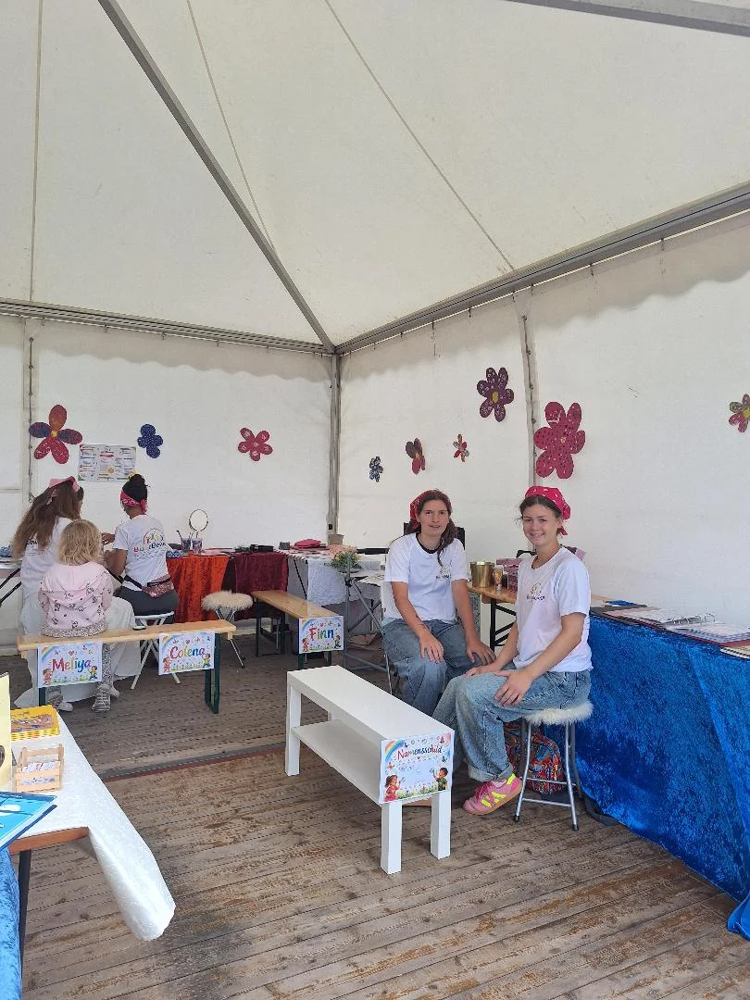
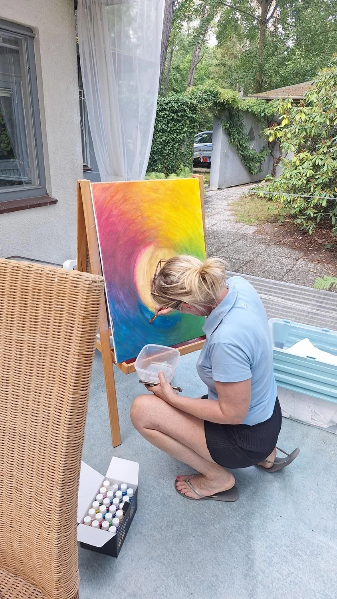
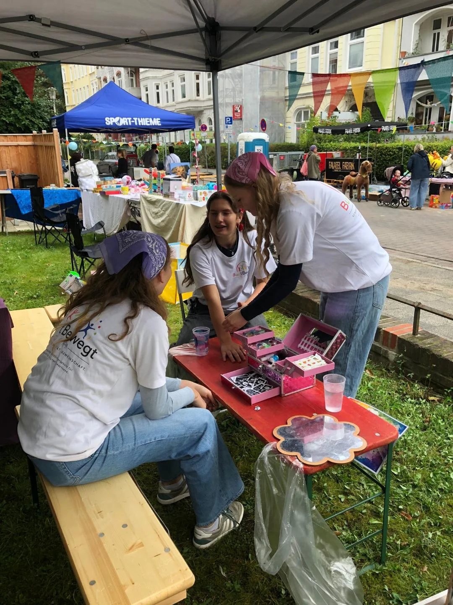
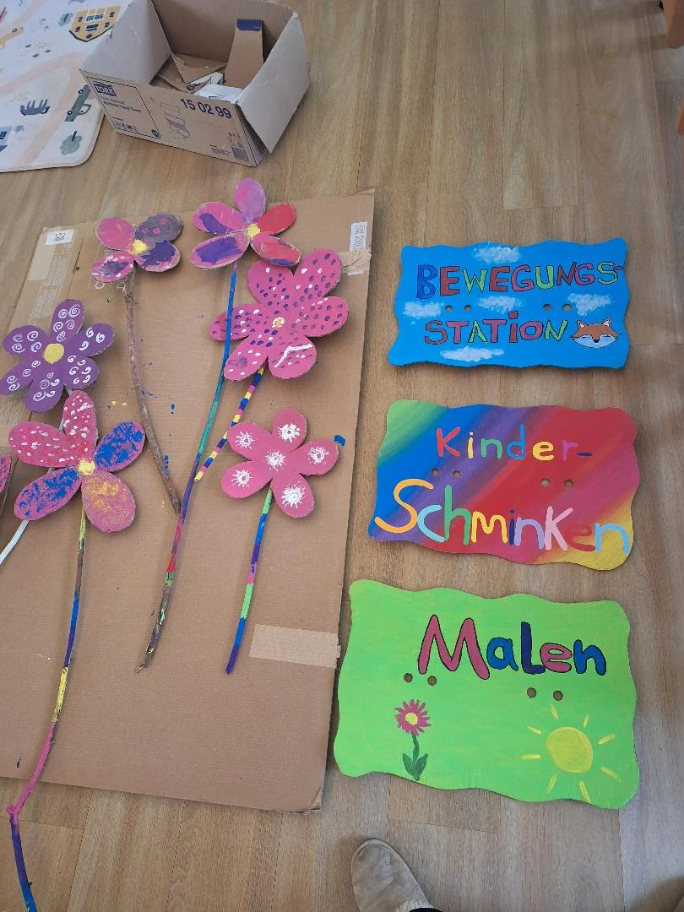
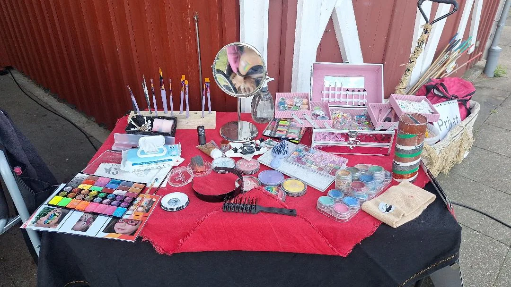

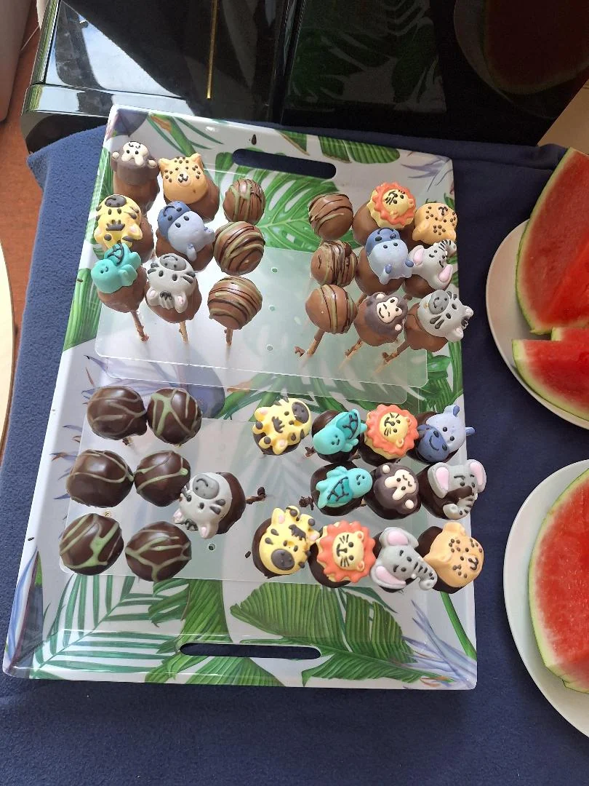
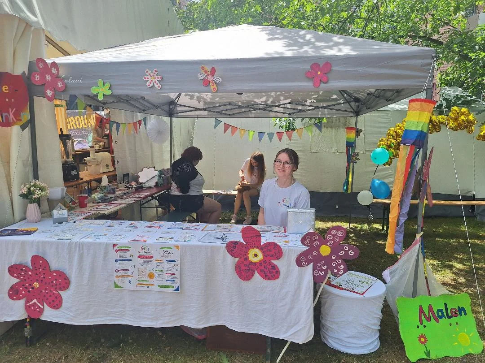
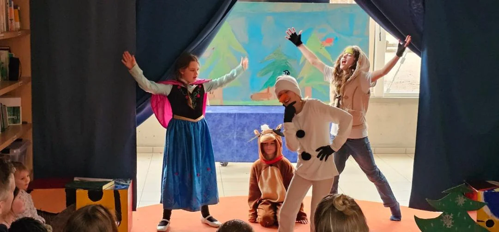
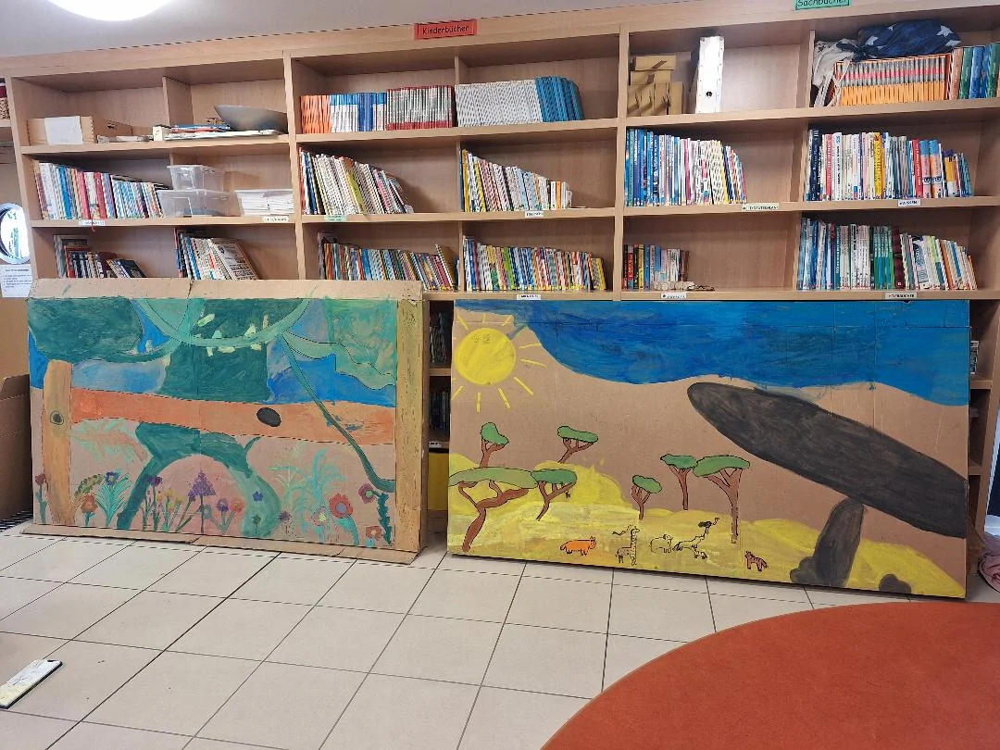
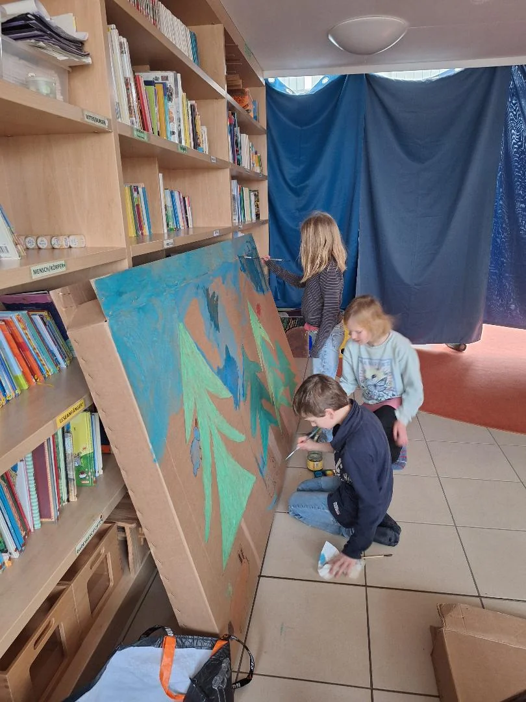
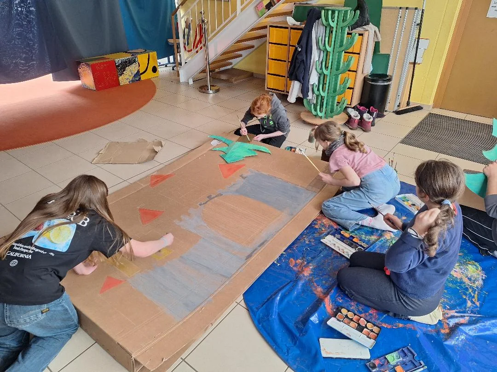
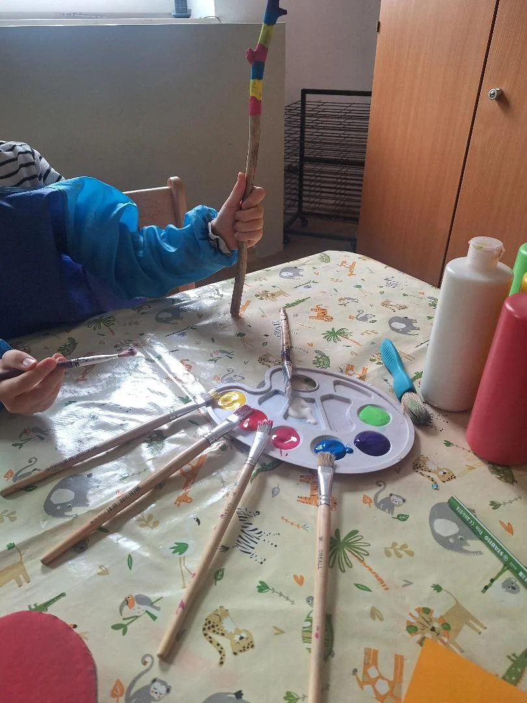
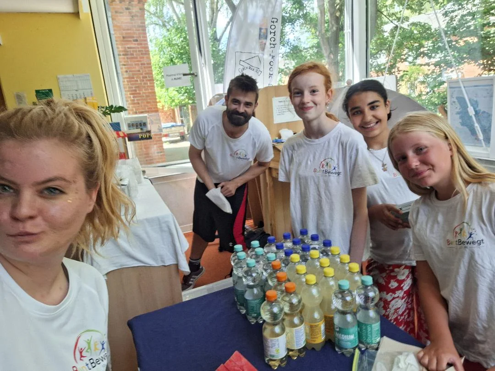
Klickt auf ein Bild, um es größer anzusehen.
WIR FREUEN UNS AUF EUCH
Erzählt uns, welches Thema euch interessiert und für wen ihr plant. Gemeinsam stellen wir euren Workshop oder eure Projektwoche zusammen.
NOCH MEHR ENTDECKEN